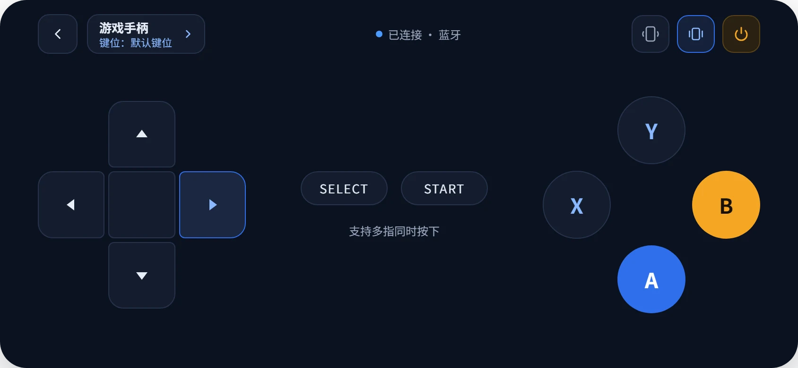
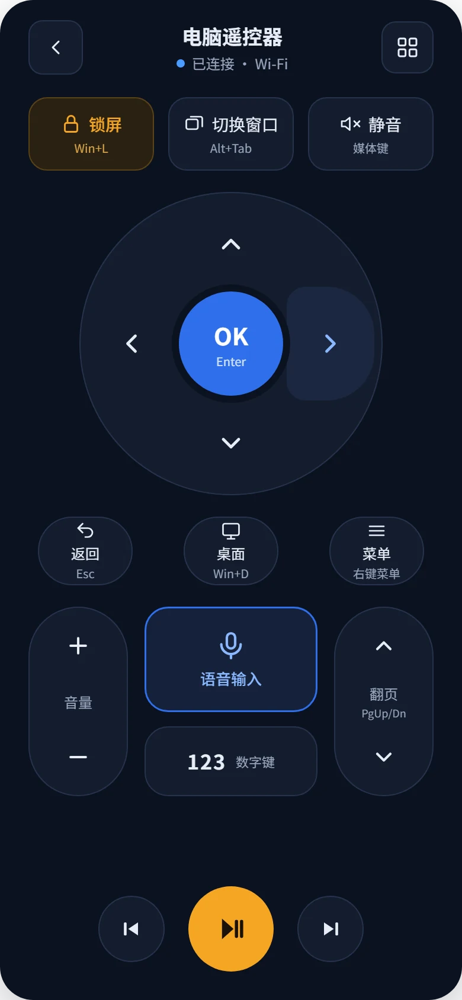
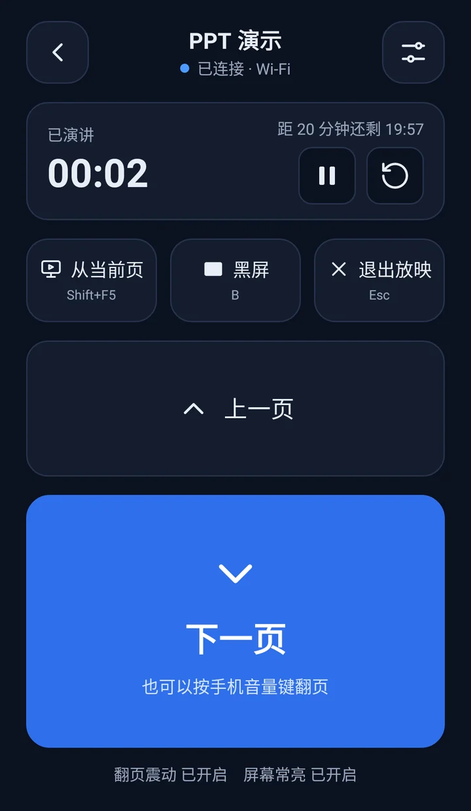
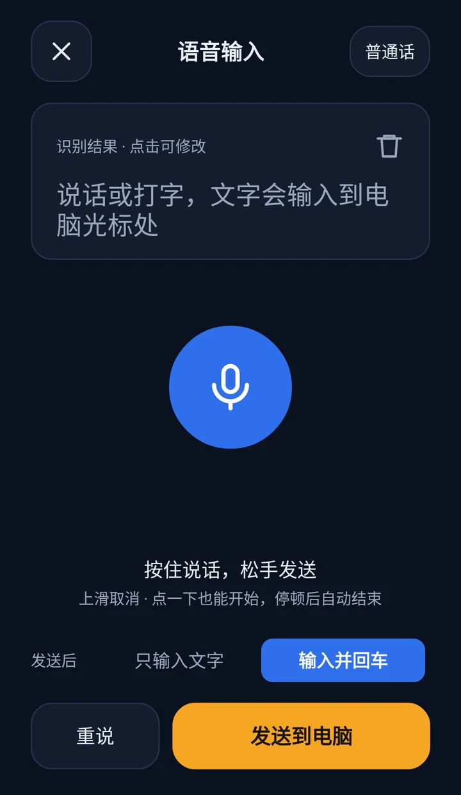

把手机变成电脑的
手柄、遥控器和键盘
打游戏、躺在沙发上看视频、上台讲 PPT、对着手机说话打字——都不用再走到电脑前。手机和电脑通过 Wi‑Fi 或蓝牙直连，不经过任何服务器。
开源免费，无广告 · 手机端和电脑端都要安装
四种用法
一部手机，按场景换着用
连上电脑后在首页选模式，随时可以回首页换，连接不会断开。
游戏手柄 横屏双手
方向键、A / B / X / Y、Select、Start，每个按钮都对应电脑上的一个按键，玩模拟器和键盘游戏都合适。
- 多根手指同时按、按住滑出按钮，都能正确松开，不会卡键
- 内置默认键位，也可以给每个游戏建一套自己的方案，一个按钮最多 3 个键组合
- 可选重力感应：左右倾斜手机就是方向键，适合赛车游戏
- 按键震动反馈

电脑遥控器 竖屏单手
长得像电视遥控器，控制的是电脑。把电脑接上电视或投影，躺在沙发上就能操作。
- 方向键、确定、返回、音量、上一曲 / 播放暂停 / 下一曲、翻页
- 一键锁屏、回到桌面、切换窗口、右键菜单
- 数字键盘：输入集数、页码、验证码
- 方向键、确定、音量和翻页支持按住：手指不松，电脑上这个键就一直按着

PPT 演示 竖屏单手
大号翻页按钮不用看屏幕也能按准，讲台上不必守在电脑旁边。
- 手机音量键也能翻页：音量加是上一页，音量减是下一页
- 演讲计时，剩余 2 分钟时手机长震一次提醒，不发出声音
- 从当前页放映、黑屏、退出放映一键完成
- 翻页用的是 PgUp / PgDn，PowerPoint、WPS 演示等常见放映软件都认

语音输入 在遥控器里
对着手机说话，文字直接打到电脑当前光标的位置，搜索片名、回消息都不用找键盘。
- 按住麦克风说话，松手就发到电脑；上滑取消
- 支持普通话、粤语和英语
- 发送后可以自动按回车，搜索框里说完就能搜
- 识别结果可以先改再发，也可以直接打字

三步开始
第一次使用，几分钟就能连上
手机端负责发出按键，电脑端负责在电脑上执行，两边都要安装。
安装两端
手机安装蓝色手柄，Windows 电脑安装蓝色手柄电脑端。电脑端不需要安装，下载后直接运行。
连接
手机和电脑连同一个 Wi‑Fi，手机点「开始连接」，在电脑端输入手机显示的地址。也可以配对后用蓝牙连接。
选模式
在手机首页选游戏手柄、遥控器或 PPT 演示。电脑端会实时显示收到的按键和文字。
更多细节
小工具，也认真做
Wi‑Fi 和蓝牙都能连
家里用 Wi‑Fi，会议室没有网络就用蓝牙。连接在局域网里直达，不经过任何服务器。
断了自动重连
连接意外断开后，电脑端会自动重试；还能设置开机启动、启动时连接上次的手机。
电脑端看得见每一下
"最近收到"实时列出按键、组合键和文字，按错了一眼就能看出来；需要时可以暂停接收。
浅色和深色主题
默认跟随手机系统，也可以固定成浅色或深色。昏暗的会场和夜里用深色不刺眼。
锁屏真的能锁
Windows 会拦截模拟的 Win+L，蓝色手柄改由电脑端直接调用系统锁屏，离开座位一按就锁。
开源免费
MIT 许可证，代码都在 GitHub。没有广告，不收集数据，也不需要注册账号。
下载
两端都装好就能用
都从 GitHub Releases 下载最新版本。
常见问题
用之前你可能想知道
需要联网吗？会上传我的数据吗？
不需要互联网，手机和电脑在同一个局域网里，或通过蓝牙直接连接。按键和文字只在两台设备之间传输，不经过任何服务器。
支持 Mac 和 Linux 吗？
图形界面的电脑端目前只有 Windows 版。电脑端源码是 Go 写的，命令行版可以在其他系统上编译，但按键注入目前只实现了 Windows。
为什么有的游戏或程序里按键没反应？
以管理员身份运行的程序（部分游戏、任务管理器）只接受同样以管理员身份运行的程序发来的按键。在电脑端设置里点"以管理员身份重启"即可。
手机熄屏后还能用吗？
不能。熄屏后系统会暂停应用，连接会断开。设置里默认开启"屏幕常亮"，连接期间手机不会自动熄屏。
连不上怎么办？
最常见的原因是手机和电脑不在同一个 Wi‑Fi，或者路由器开了"访客网络 / AP 隔离"。手册里有完整的排查步骤。